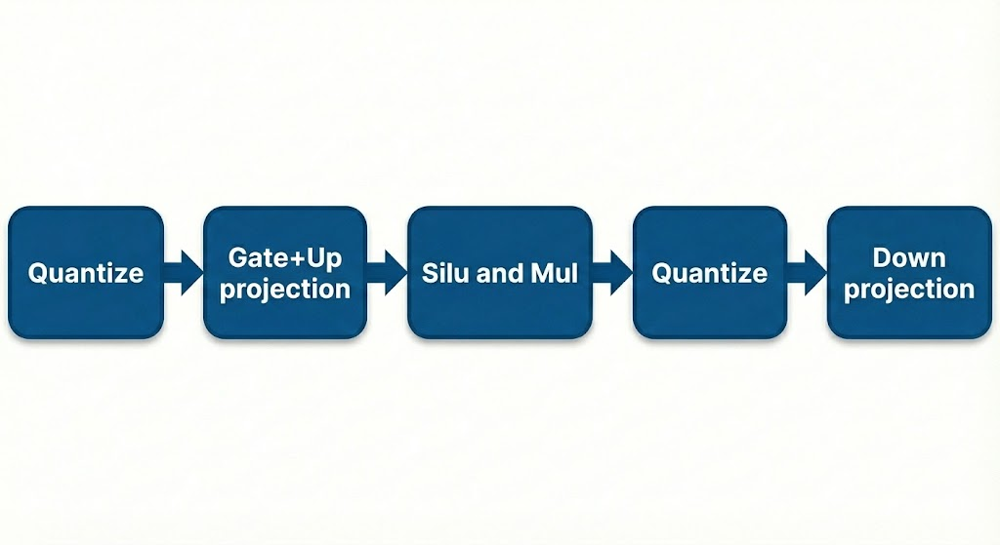
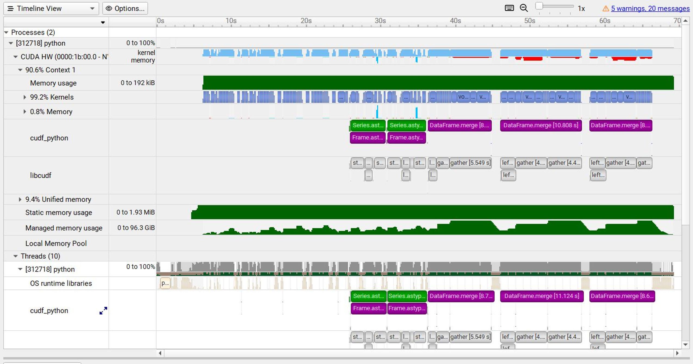
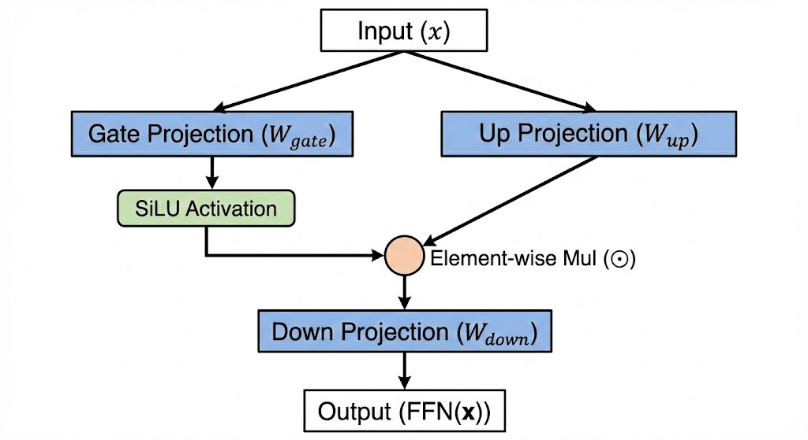
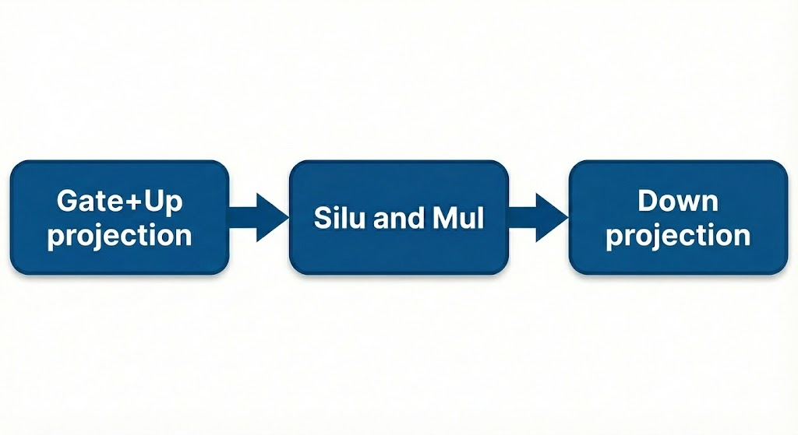
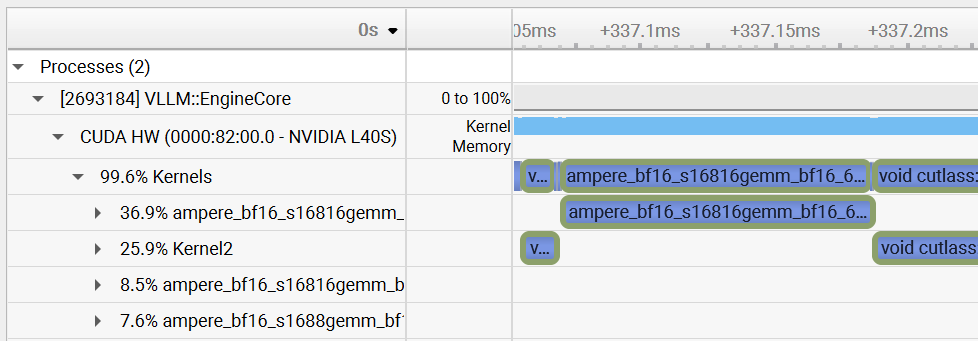
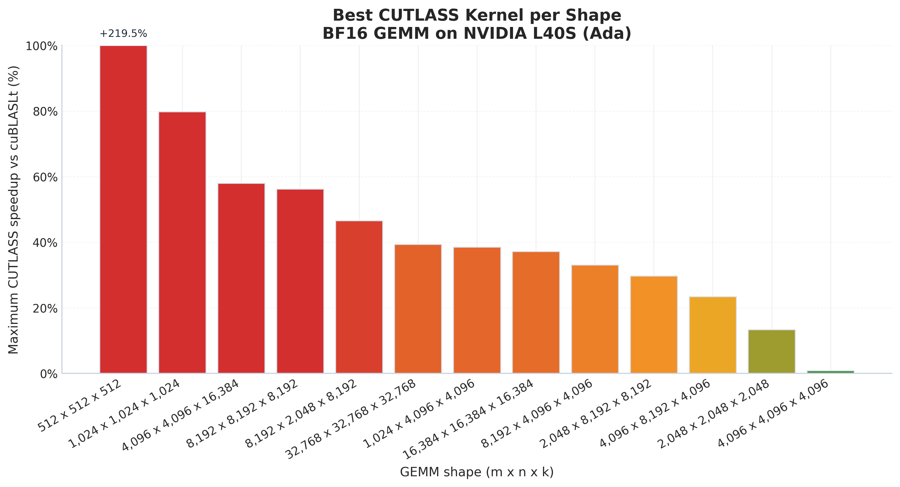
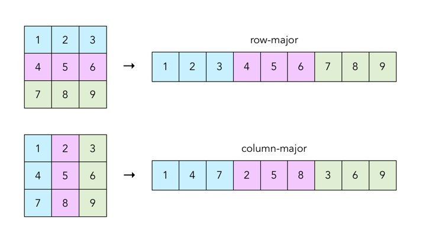
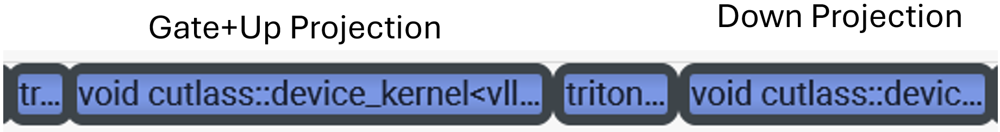
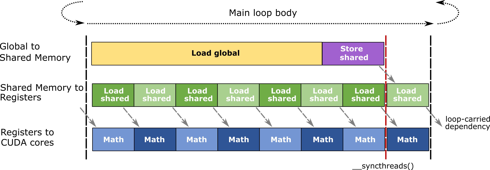
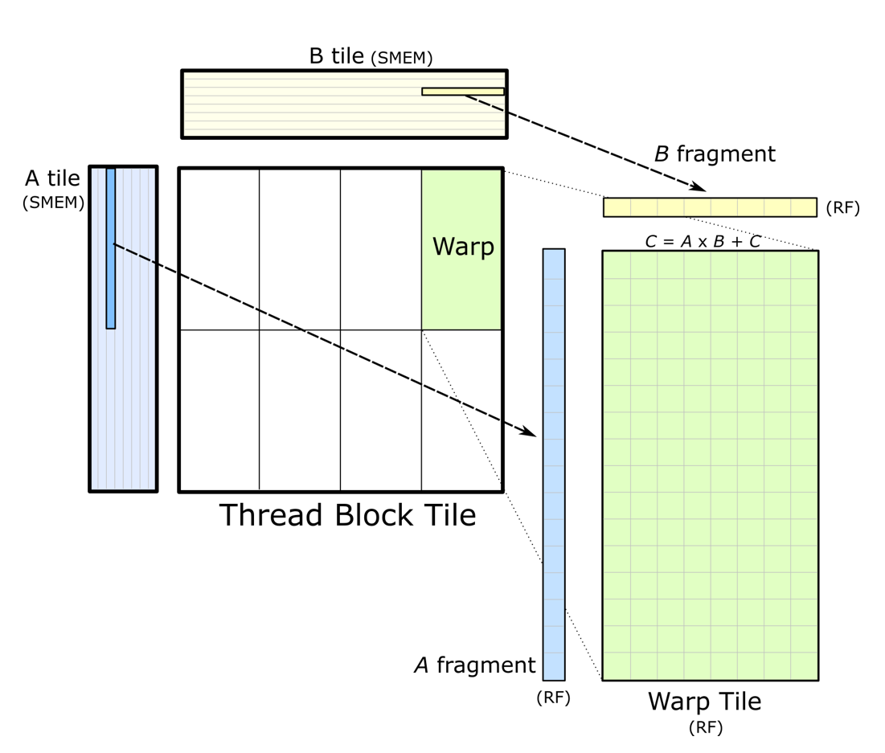

Top: BF16 hotpath (3 kernels). Bottom: FP8 hotpath (5 kernels).
May 2026
Modern transformer models are built from two main components: the attention layer and the MLP (multi-layer perceptron) layer. And yet, while attention has seen a wave of highly optimized kernels like FlashAttention and PagedAttention, the MLP has largely been ignored. In leading models like Qwen3-8B, the MLP accounts for 3.6× more FLOPs (floating point operations) than attention across 36 layers. Most of the forward pass is spent there, often without any specialized optimization.
The fix, when we found it, was to fuse the MLP's activation directly into the GEMM epilogue, keeping data in registers instead of dumping it to main memory and reading it back. In Part 2, we show it working: 1.2× faster than vLLM's kernel in isolation, ~1% end-to-end throughput gain on Qwen3-8B. Getting there took a while.
We started this as a Technion CS project. Our original idea was a cross-lingual NLP project, focusing on gaps in Hebrew support in LLMs, which we pitched to Kira Radinsky. She had other plans. She redirected us to inference optimization and sent us Karpathy's "Let's Reproduce GPT-2." That detour ended up defining the entire project.
We didn't know anything about GPU programming. So we spent the weeks before the semester catching up, reading papers, learning what a kernel launch is, and trying to understand how inference systems actually work in practice. A big part of that meant digging into vLLM, an open-source engine built to serve large language models efficiently at scale. We chose vLLM as our target because it's widely used, which meant any improvement wouldn't just stay on paper. It would actually make a difference in real-life systems.
We ran Nsight Systems ("nsys") on vLLM serving Qwen3-8B, a modern 8B-parameter language model, on an L40S GPU, and started digging through the trace. Nsight records every GPU kernel launch with timestamps, so you can see exactly what ran, when, and for how long.

Nsight Systems. Every kernel launch on a timeline. NVIDIA docs.
Attention is already heavily optimized, with kernels like FlashAttention and PagedAttention handling most of that space. That part of the stack was essentially solved. We did not dare touching it.
The MLP, however, looked like a more feasible target. The MLP in modern transformers uses a variant called SwiGLU (Swish-Gated Linear Unit). It's named for the combination of a gating mechanism with the SiLU ("Swish") activation function, and it has become a standard choice because it improves model quality without significantly increasing compute.
Concretely, SwiGLU splits the computation into two parallel projections: a "gate" projection and an "up" projection. The gate goes through a SiLU activation, the two are multiplied element-wise, and the result is passed through a final "down" projection. This structure translates into three sequential kernels: gate+up GEMM (Matrix Multiplication Kernel), activation (SiLU + multiply), and down GEMM. The middle kernel is the problematic one. It takes the full BF16 intermediate output from the GEMMs, performs a trivial operation, and writes it back to memory, even though the data had just been produced in registers. This happens 36 times per forward pass.

SwiGLU data flow. Used by almost every modern LLM.

The SwiGLU hotpath. Three kernels, with HBM reads and writes between each.
Something in the nsys traces looked suspicious. The kernel names said "ampere." We were running on an L40S (Ada, SM89), while Ampere is SM80, a previous generation entirely. For a moment, it looked like we were hitting some deeper issue. Maybe the wrong kernel path. Maybe a mismatch in execution.

vLLM's kernel trace on L40S. The kernel names say "ampere" on Ada hardware.
We decided to benchmark it. We ran a sweep comparing the kernels PyTorch dispatches against the fastest CUTLASS GEMM kernels we could find for each shape. CUTLASS is NVIDIA's low-level open-source library for matrix multiplications. It exposes control over tile shapes, memory access patterns, and scheduling, much closer to the hardware than PyTorch's default kernels.

CUTLASS vs cuBLASLt speedup per shape, BF16 on L40S. 219% at 512×512. Less exciting at real inference shapes.
At small shapes like 512×512, custom CUTLASS kernels were up to 219% faster than cuBLASLt's heuristic selection. These weren't marginal gains. This looked like a real break in the dispatch logic of vLLM. For a moment, it genuinely felt like we had found something serious.
We wrote it up as a paper, with roofline analysis, architecture comparisons, and Amdahl's Law projections to model the expected gains. Kira Radinsky forwarded it to a senior GenAI executive at Meta. His response was short:
"Interesting analysis, but show me the end-to-end numbers."
So we wrote custom dispatch code to inject our best CUTLASS kernel into vLLM's gate+up projection. But there was a catch: vLLM stores weights in row-major format, while CUTLASS's fastest kernels assume column-major layouts for efficient memory access. The mismatch meant we couldn't actually use the best kernels. We ended up using a row-major CUTLASS variant instead, which is only marginally better than what vLLM already had. End-to-end, we achieved no speedup.
The "ampere" label turned out to refer to kernel lineage, not the target architecture. The kernels were fine for L40S. At inference-relevant shapes, our custom CUTLASS kernel matched vLLM's default almost exactly. No dispatch bug. No speedup.
The next step felt obvious. If the CUTLASS kernel was slow because of row-major weights, the fix is easy: just transpose them. CUTLASS's fastest code path expects column-major weights, and PyTorch stores everything row-major.

Row-major vs column-major. Same matrix, different memory layout.
We transposed the weights to column-major at model load time. From there, we had two options.
Either use column-major weights with row-major activations, which isn't actually faster since the access pattern is still mismatched. Or transpose the activations at runtime too, which gave us a 13% faster kernel in isolation on qwen3-8B's 4096×12288 shape. But the runtime transpose ate the entire 13% gain. Net negative.
We moved to H100 and switched to FP8 (uses 8 bits per parameter instead of 16). Half the bits, half the memory traffic.
But FP8 adds complexity. Each GEMM needs quantization kernels to convert its inputs, and each launch carries overhead. More kernels meant more optimization opportunities. The BF16 hotpath is 3 kernels. The naive FP8 hotpath is 5.

Top: BF16 hotpath (3 kernels). Bottom: FP8 hotpath (5 kernels).
We wrote a fused silu+mul+quantize kernel in Triton, bringing it down to 4. Half the memory traffic on the GEMMs, one fewer kernel launch. This had to be faster.
Same speed. We'd been working on this for weeks. We were starting to wonder if the MLP could be optimized at all, or if we'd picked a target that was already at the ceiling.
Back to nsys. The trace showed 4 kernels per MLP layer. There should be 5. Where was the missing kernel?

nsys trace of the FP8 MLP forward. 4 kernels, not 5.
We dug into vLLM's source first. Found a graph optimization pass that fuses silu+mul+quantize, but only for static quantization. The default is dynamic quantization, which was also what we were using. It shouldn't even apply. The mystery got weirder.
Then we found TorchInductor. torch.compile() runs PyTorch's compiler backend, which fuses operations and generates GPU code via Triton. It had already fused the entire activation and quantization pipeline into a single auto-generated kernel. The kernel name was, of course, concise:
triton_red_fused__to_copy_abs_clamp_cutlass_scaled_mm_div_max_mul_reciprocal_silu_slice_unsqueeze_2We were trying to optimize something that was already optimized. We'd written a Triton kernel by hand to fuse three operations, and the compiler had quietly done the same thing months ago. The Python code still calls silu, mul, and quantize as separate operations. The fusion only happens when TorchInductor generates the Triton kernel, so the only way to see it is in the profiler trace. nsys doesn't lie. Python source does.
None of it worked. But we knew the pipeline by heart at this point. Four kernels per MLP layer.
Kernel 3 became the target. The gate+up GEMM finishes with the result sitting in registers. Then it writes to HBM. Then kernel 3 reads it back, does a SiLU and a multiply and a quantize, and writes the result to HBM again. Then the down GEMM reads it back. Two round-trips through main memory for what amounts to simple arithmetic.
The whole time, we'd been trying to speed up individual kernels. But what if the real waste was between them? The activation kernel does ~2 FLOPs per byte of memory traffic. The surrounding GEMMs do ~768. On an H100 running FP8, you need roughly 295 FLOPs per byte to fully saturate the hardware. Kernel 3 was nowhere close, by entire orders of magnitude. But the data it needed was already sitting inside the GEMM's registers. What if the data never had to leave?
CUTLASS GEMMs have an 'epilogue phase'. After the matrix multiply finishes, there's a window where the output tiles are still in registers before they get written out. Normally this just does scaling and type casting. But it can do anything: SiLU, multiply, FP8 quantize, all of it, while the data is still on-chip.
CUTLASS kernel internals. Left: the async memory pipeline (global → shared → registers → cores). Right: thread block tiling.


vLLM already fuses the activation operations into a single Triton kernel. This is what TorchInductor generates. But that kernel still reads from and writes back to HBM.
No one in the open-source stack fuses the activation directly into the GEMM epilogue itself.
We later found out NVIDIA does exactly this in TensorRT-LLM via their gemm_swiglu_plugin, but it’s FP8-only, closed-source, and tightly integrated into their inference stack. For H100s running vLLM, there was nothing equivalent.
The implication was immediate: about ~12MB of HBM traffic eliminated per layer, ~430MB across a full 36-layer forward pass. The activation kernel effectively disappears, and four kernel launches become three.
We put it in the project report as future work. Exams came. We stopped.
Or at least, we tried to. We couldn't stop thinking about it. Three weeks later, we rented an H100 on RunPod and started writing CUDA.